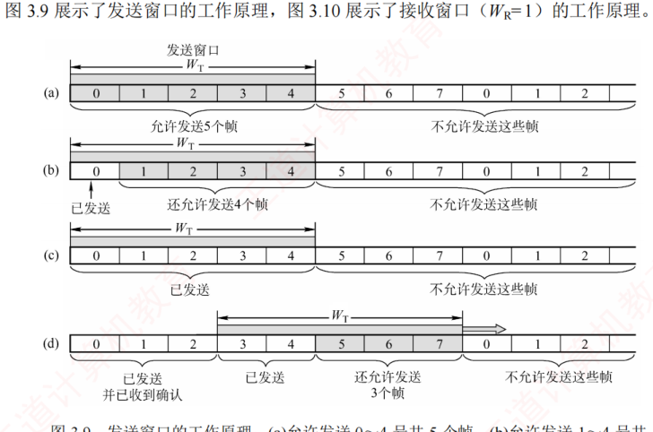
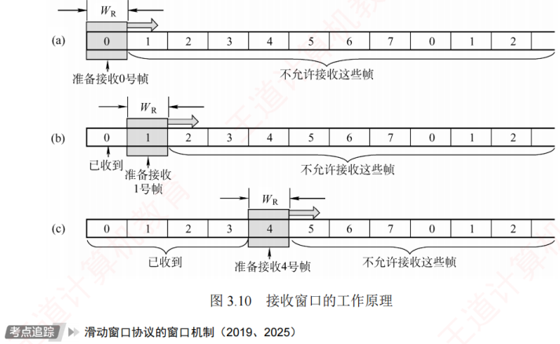
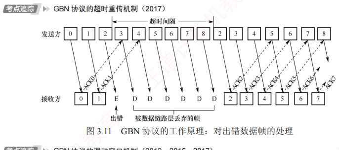
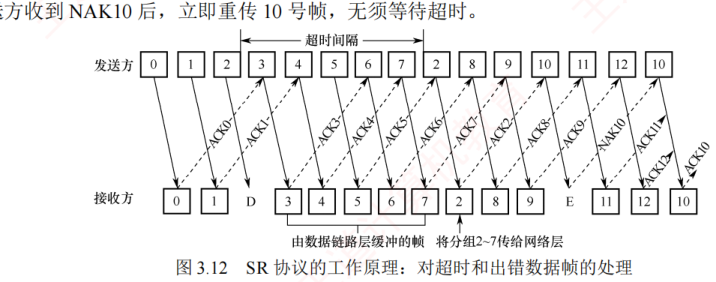
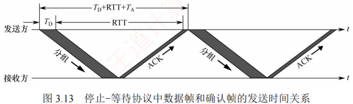
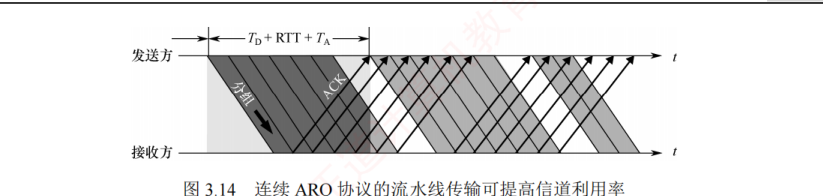

3.4 流量控制与可靠传输机制
对应王道教材 3.4 节（教材 P61–P67）· 本节属于 408 考纲范围，考点密集
在数据链路层中，流量控制机制和可靠传输机制是紧密交织的：流量控制协调发送方的发送速率，可靠传输保证数据帧被正确且完整地接收，而实现二者的核心手段——滑动窗口与超时重传——往往是同一套机制的两面。
3.4.1 流量控制与滑动窗口机制 考点
流量控制是指由接收方控制发送方的发送速率，确保接收方有足够的缓存空间来接收每一个帧。常见的流量控制方法有两种：停止-等待协议和滑动窗口协议。数据链路层和传输层均具备流量控制的功能，且都采用了滑动窗口的思想，但二者存在明显区别：
- 数据链路层控制的是相邻节点之间的流量，而传输层控制的是端到端的流量；
- 数据链路层的控制手段是：当接收方无法接收时，不返回确认；而传输层的控制手段是：接收方在确认报文段中携带窗口字段值，动态调整发送方的发送窗口大小。
1．停止-等待流量控制基本原理
停止-等待流量控制是一种最简单的流量控制方法。发送方每次仅允许发送一个帧，接收方每成功接收一个帧后，需返回一个确认帧，表示可以接收下一帧；发送方只有收到确认帧后，才能发送后续帧。若未收到确认帧，发送方将一直等待。由于发送方在发送完一个帧后必须等待确认，因此信道利用率较低，传输效率不高。
2．滑动窗口流量控制基本原理
滑动窗口流量控制是一种更高效的流量控制方法。在任意时刻，发送方维持一组连续的、允许发送的帧序号，称为发送窗口（\(W_T\)）；接收方也维持一组连续的、允许接收的帧序号，称为接收窗口（\(W_R\)）。发送窗口的大小决定了在未收到对方确认的情况下，发送方最多还能发送多少帧以及哪些帧；接收窗口则用于控制接收方可以接收哪些帧，超出窗口范围的帧将被丢弃。


发送方每收到一个按序到达的确认帧，就将发送窗口向前滑动一个位置，从而允许发送一个新帧。当窗口内所有帧均已发送但尚未收到确认时，发送方暂停发送。接收方每收到一个序号落在接收窗口内的帧，便接收该帧，随后将接收窗口向前滑动一个位置，并返回确认。若收到的帧序号落在接收窗口之外，则一律丢弃。
- 发送窗口的滑动依赖于确认信息：仅当发送方收到对某帧的确认后，其发送窗口才能向前滑动；而接收方仅在成功接收期望帧后，才会发送确认并滑动其接收窗口。
- 从滑动窗口的角度看，停止-等待协议、后退 N 帧协议与选择重传协议的主要区别在于发送窗口和接收窗口的大小：
- 停止-等待协议：发送窗口 \(W_T=1\)，接收窗口 \(W_R=1\)；
- 后退 N 帧协议：发送窗口 \(W_T>1\)，接收窗口 \(W_R=1\)；
- 选择重传协议：发送窗口 \(W_T>1\)，接收窗口 \(W_R>1\)。
- 当接收窗口大小为 1 时，只有收到该帧后才允许接收下一帧，因此可保证帧的有序接收。
- 在数据链路层的滑动窗口协议中，窗口大小在传输过程中是固定的（与传输层不同）。
抓住三条判据即可应对绝大多数窗口计算题：①三种协议的窗口取值组合（见上）；②序号比特数 \(n\) 对窗口总和的约束 \(W_T+W_R\le 2^n\)；③数据链路层窗口尺寸固定、传输层窗口可动态变化。例如：采用 3 比特编号、发送窗口为 5 的滑动窗口协议，接收窗口最大为 \(2^3-5=3\)。
3.4.2 可靠传输机制 考点
可靠传输是指发送方发出的数据能够被接收方正确且完整地接收。为实现这一目标，通常采用确认（ACK）和超时重传两种机制：
- 确认：接收方每成功接收到一个数据帧，就向发送方返回一个确认帧，表明该数据帧已被正确接收；
- 超时重传：发送方在发送一个数据帧后启动一个计时器，若在规定时间内未收到对应的确认帧，则认为该帧可能丢失或出错，从而自动重传该帧，直至成功收到确认为止。
结合这两种机制的可靠传输协议称为自动重传请求（Automatic Repeat reQuest，ARQ），它意味着：重传由发送方自主触发，无须接收方显式请求重传。在 ARQ 协议中，数据帧和确认帧都必须编号，以便发送方和接收方能够准确识别确认帧对应的是哪个数据帧，以及判断哪些帧尚未被确认，从而决定是否需要重传。ARQ 协议主要包括三种类型：停止-等待（Stop-and-Wait）协议、后退 N 帧（Go-Back-N）协议和选择重传（Selective Repeat）协议。这三种协议的基本原理不仅适用于数据链路层，也可应用于更高层的可靠传输设计。
取决于链路特性：有线网络的误码率较低，为降低开销，一般不要求数据链路层提供可靠传输服务，即使出现少量误码，也可由上层（如传输层）通过端到端机制处理；无线网络的链路易受干扰、误码率较高，因此要求数据链路层必须向上层提供可靠传输服务，以避免大量错误帧传递至上层，提升整体效率。
1．单帧滑动窗口与停止-等待协议（S-W）
在停止-等待协议中，发送方每次只能发送一个数据帧，只有在收到接收方对该帧的确认帧后，才能发送下一个帧。从滑动窗口的角度看，该协议的发送窗口和接收窗口大小均为 1。
在实际传输过程中，可能出现以下两类差错：
- 数据帧出错或丢失。接收方检测到数据帧存在差错时，直接丢弃该帧；数据帧在传输途中丢失时，接收方不会收到任何信息。为应对这两种情况，发送方需要配备一个计时器：每发送完一个数据帧，发送方即启动该计时器；计时器超时仍未收到对应的确认帧时，认为该帧可能已丢失或出错，于是自动重传该帧。该过程重复进行，直至该帧被正确接收并返回确认帧为止。
- 确认帧出错或丢失。即使接收方已成功收到正确的数据帧，若其返回的确认帧在传输中出错或丢失，则发送方仍将因未收到确认而触发超时重传。这时，接收方会再次收到一个重复的数据帧。为避免重复处理，接收方会丢弃该重复帧，并重新发送对应的确认帧。
停止-等待协议每次仅发送一帧并等待确认，因此只需确保相邻发送的帧具有不同的序号即可区分新帧与重传帧。因此，仅需 1 比特序号空间就已足够：数据帧交替使用序号 0 和 1，对应的确认帧分别记为 ACK0 和 ACK1。若接收方连续收到相同序号的数据帧，则说明发送方进行了超时重传；若发送方连续收到相同序号的确认帧，则说明接收方收到了重复帧且重发了确认帧。
此外，为支持超时重传和重复帧识别，发送方和接收方均需设置帧缓冲区：发送方发送数据帧后，必须在发送缓存中保留该帧的副本，以便需要时重传，仅在收到对应的确认帧后方可清除该副本；接收方也需记录最近成功接收的帧序号，以判断新到的帧是否是重复的帧。
停止-等待协议的信道利用率很低。为提高传输效率，后续发展出了连续 ARQ 协议（后退 N 帧协议和选择重传协议），允许发送方连续发送多个数据帧，而无须逐帧等待确认。
2．多帧滑动窗口与后退 N 帧协议（GBN）
在后退 N 帧（GBN）协议中，发送方可在未收到确认帧的情况下，连续发送多个序号落在发送窗口内的数据帧。后退 N 帧的含义是：若某个已发送的数据帧因超时未收到确认而被判定为丢失或出错，则发送方不仅需要重传该帧，还需重传其后所有已发送但未被确认的帧。这一机制的前提是：接收方仅按序接收数据帧，任何失序到达的帧都将被丢弃。
如图 3.11 所示，发送方向接收方连续发送数据帧，发送完 0 号帧后，可继续发送 1 号、2 号等后续帧。其通常仅为最早未确认的帧维护一个超时计时器，当该帧被确认后，计时器移至下一个未确认帧。由于连续发送了多个帧，确认帧必须明确指示所确认的帧序号。为降低开销，GBN 协议采用累积确认机制：接收方无须对每个正确接收的帧立即返回确认，而可在连续收到多个正确帧后，仅对其中序号最大的帧发送一个确认。具体而言，ACKn 表示接收方已正确收到 n 号帧及之前的所有帧，下次期望接收的是 n+1 号帧（若序号回绕，则可能是 0 号帧）。

由于接收方仅按序接收帧，当某帧出错或丢失时，其后所有正确到达的帧即便无误，也会被丢弃。例如在图 3.11 中，尽管在出错的 2 号帧之后又收到了 6 个正确的数据帧，接收方仍必须将它们全部丢弃。此外，为了防止确认帧丢失，接收方可以重复发送最近一次的确认帧（如 ACK1），促使发送方尽快感知当前的接收状态。2 号帧的计时器超时后，发送方将从该帧开始，重传窗口内所有未被确认的帧（2 号及之后的帧）。
若采用 \(n\) 比特对帧编号，则发送窗口 \(W_T\) 应满足 \(1 < W_T \le 2^n - 1\)。若 \(W_T > 2^n-1\)，可能导致接收方无法区分新发送的帧与因序号回绕而重复出现的旧帧。GBN 协议的接收窗口大小固定为 \(W_R=1\)，这保证了帧的严格按序接收。
GBN 协议一方面通过连续发送多个帧显著提高了信道利用率；另一方面，在发生差错时却必须重传大量已正确到达的帧（仅因为这些帧前面有一帧出错），从而造成带宽浪费。因此，当信道误码率较高时，GBN 协议的性能可能反而不如停止-等待协议。
3．多帧滑动窗口与选择重传协议（SR）
为了进一步提高信道的利用率，可以设法仅重传出错或超时的数据帧，而不影响其他已正确传输的帧。为此，接收方必须能够暂存失序但正确到达、且序号仍落在接收窗口内的数据帧，待缺失序号的帧收齐后，再按序交付给上层。这种机制即为选择重传（SR）协议。
为实现仅重传出错帧的目标，接收方不能再采用累积确认，而需对每个正确接收的数据帧逐一发送确认。显然，选择重传协议比后退 N 帧协议更为复杂：
- 接收方需设置足够大的帧缓冲区（其数量等于接收窗口大小），用于暂存正确的失序帧；
- 发送方为每个未确认的帧维护独立的计时器，当某帧的计时器超时时，仅重传该帧；
- 若接收方收到重复的数据帧（表示确认帧丢失），则丢弃该帧，并重传对应的确认帧。
此外，选择重传协议还引入了更高效的差错处理策略：一旦接收方检测到某个数据帧出错，可立即向发送方发送否定帧（NAK），请求重传 NAK 指定的帧，从而避免等待超时。
在图 3.12 中，2 号帧丢失后，接收方仍可正常接收并缓存后续到达的数据帧（如 3～9 号帧）；发送方超时重传 2 号帧并被成功接收后，接收窗口即可向前滑动。在某个时刻，若接收方检测到 10 号帧出错，则会立即发送否定帧 NAK10；在此期间，接收方仍可继续接收并缓存后续帧；发送方收到 NAK10 后，立即重传 10 号帧，无须等待超时。

选择重传协议的接收窗口 \(W_R\) 和发送窗口 \(W_T\) 均大于 1，允许一次发送或接收多个数据帧。若采用 \(n\) 比特对帧编号，需满足两个条件：
- \(W_R + W_T \le 2^n\)：不满足此条件时，接收窗口向前滑动后，若部分确认帧丢失，发送方可能重传旧序号的帧，由于序号空间不足，这些重传帧的序号可能与新帧重叠，导致接收方无法区分新帧与旧帧；
- \(W_R \le W_T\)：若接收窗口大于发送窗口，则接收窗口中超出发送窗口范围的部分永远无法被填满，造成资源浪费。
由①和②不难推出 \(W_R \le 2^{n-1}\)。在实际应用中，常取 \(W_R = W_T = 2^{n-1}\)，以充分利用序号空间。
4．三种 ARQ 协议对比 考点
| 协议 | 发送窗口 \(W_T\) | 接收窗口 \(W_R\) | 确认方式 | 出错时的重传 | 序号约束（n 比特编号） |
|---|---|---|---|---|---|
| 停止-等待（S-W） | = 1 | = 1 | 逐帧确认（ACK0/ACK1 交替） | 超时后重传当前这一帧 | 仅需 1 比特序号 |
| 后退 N 帧（GBN） | \(1 < W_T \le 2^n-1\) | = 1 | 累积确认（ACKn 表示 n 号及之前全部收到） | 重传该帧及其后所有已发送未确认的帧 | \(W_T + W_R \le 2^n\) |
| 选择重传（SR） | \(W_T > 1\)，常取 \(2^{n-1}\) | \(W_R > 1\)，常取 \(2^{n-1}\) | 逐帧独立确认（可用 NAK 请求重传） | 仅重传出错或超时的那一帧 | \(W_R + W_T \le 2^n\) 且 \(W_R \le W_T\) |
接收窗口为 1（S-W、GBN）⇒ 必须按序接收，失序帧丢弃；接收窗口 > 1（SR）⇒ 可暂存失序帧，确认不再具有累积性。信道误码率低时 GBN/SR 占优，误码率高时 GBN 可能不如停止-等待。
5．信道利用率的分析 考点
信道利用率用于衡量信道的使用效率。从时间角度看，信道效率是针对发送方而言的，是指发送方在一个发送周期（从发送方开始发送一个分组，到收到对该分组的确认所需的时间）内，有效发送数据的时间与整个发送周期之比。
（1）停止-等待协议的信道利用率
停止-等待协议的优点是实现简单，但缺点是信道利用率极低。图 3.13 显示了停止-等待协议中数据帧和确认帧的发送时间关系。假定在发送方和接收方之间有一个直通的信道来传送分组。

发送方发送一个分组的发送时延为 \(T_D\)，显然 \(T_D\) 等于分组长度除以数据传输速率。假定分组正确到达接收方后，其处理时间可忽略不计，接收方立即返回确认；接收方发送确认分组的发送时延为 \(T_A\)（通常可忽略不计）。再假设发送方处理确认分组的时间也可忽略不计，则发送方经过时间 \(T_D + RTT + T_A\) 后就可再发送下一个分组，其中 RTT 是往返时延。由于仅有 \(T_D\) 时间用于有效发送数据，因此停止-等待协议的信道利用率 \(U\) 为
假定某信道的 RTT = 20ms，分组长度为 1200 比特，数据传输速率为 1Mb/s。若忽略处理时延和 \(T_A\)：\(T_D = 1200\text{b} \div 1\text{Mb/s} = 1.2\text{ms}\)，则 \(U = 1.2 \div (1.2 + 20) \approx 5.66\%\)。若将数据传输速率提高至 10Mb/s，则 \(T_D=0.12\text{ms}\)，\(U = 0.12 \div 20.12 \approx 0.596\%\)。由此可见，当 RTT 远大于 \(T_D\) 时，停止-等待协议的信道利用率会非常低。
（2）连续 ARQ 协议的信道利用率
连续 ARQ 协议采用流水线传输（见图 3.14），允许发送方连续发送多个分组，从而在信道上维持持续的数据流动。只要发送窗口足够大，即可显著提升信道利用率。

设连续 ARQ 协议的发送窗口大小为 \(N\)（最多可连续发送 \(N\) 个分组），分为两种情况：
- 若 \(N T_D < T_D + RTT + T_A\)：即在一个发送周期内可发送完 \(N\) 个分组，此时信道无法被完全占满，信道利用率为
$$U = \frac{N T_D}{T_D + RTT + T_A}$$
- 若 \(N T_D \ge T_D + RTT + T_A\)：即在一个发送周期内发不完（或刚好发完）\(N\) 个分组，只要无差错发生，发送方可持续不间断地发送，信道被完全利用，此时信道利用率 \(U = 1\)。
在相同序号比特数下，GBN 的发送窗口大于停止-等待协议，因此理想条件下信道利用率更高。但是，当信道误码率较高时，其实际信道利用率甚至可能低于停止-等待协议。
"信道平均（实际）数据传输速率 = 信道利用率 × 信道带宽（最大数据传输速率）"，或"信道平均（实际）数据传输速率 = 发送周期内发送的数据量 ÷ 发送周期"。这两条等价口径是利用率计算题的常用出口。
①发送周期 ≠ RTT：发送周期 = \(T_D + RTT + T_A\)，确认帧的发送时延 \(T_A\) 题目若未说明忽略则要计入；②SR 的最大窗口与 GBN 的最大窗口不同：GBN 为 \(2^n-1\)，SR 为 \(2^{n-1}\)（发送、接收窗口相等时）；③"至少需要多少比特编号"类题目，先求所需最小窗口，再由 \(2^n\) 反解 n。
注：教材本节未对三种 ARQ 协议的滑动窗口动态变化过程展开具体示例（配套视频中有丰富的过程演示），建议结合动画或自行画窗口滑动图加深理解——尤其要动手推演"发送窗口滑动的条件是收到确认"与"序号回绕导致新旧帧混淆"这两类过程。